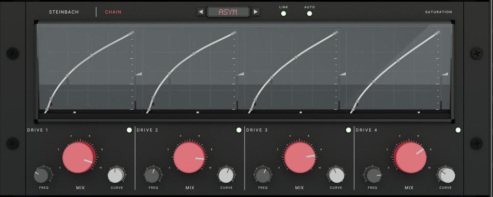
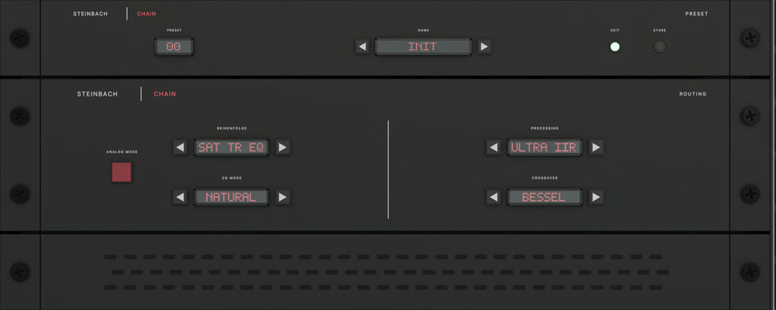
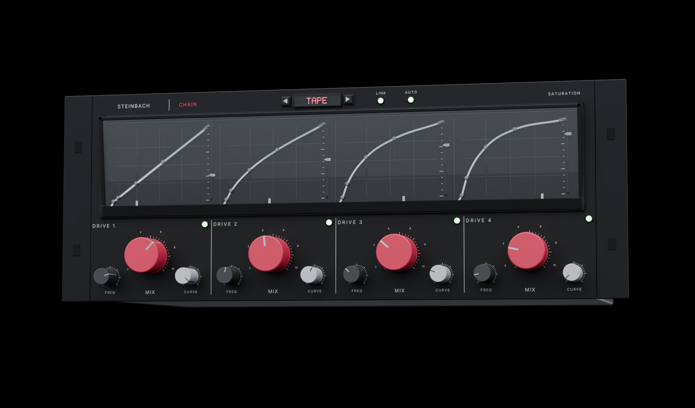

It matches the level
HOLD CMD+B
Louder always sounds better, so the comparison takes loudness out of it. Chain applies the inverse of its own level change to the bypassed signal, and freezes the match the moment you press. You hear tone, not volume.
Steinbach Chain · CLAP · VST3 · AU
They were voiced on a solo track, one at a time, by someone listening to nothing else. Chain was built the other way round, for the level a band really has when forty of them are playing.
Demo unlimited, full quality · macOS and Windows
The thing nobody admits
You solo a track, switch something on, and it sounds better. Then you play the song, and the thing you improved is harder to hear than before.
Your ears are fine. Almost every plugin is voiced and demonstrated on one track playing alone, and a mix is never heard that way. Solo, the louder version wins. In a mix, the track that wins is the one that leaves room for everything else.
Chain is built around that difference instead of ignoring it.
How it knows
Every plugin claims to sound good. These are the parts you can check.
HOLD CMD+B
Louder always sounds better, so the comparison takes loudness out of it. Chain applies the inverse of its own level change to the bypassed signal, and freezes the match the moment you press. You hear tone, not volume.
SONE · ACUM · ASPER
A peak meter answers whether something will clip, rarely the question you have. These six answer what it will sound like, and they move before you reach for the headphones.
WHITE OUT · RED DIFFERENCE
The delayed input minus the output, across eighty bands. Red is what Chain added or took away, and red where you meant to touch nothing means a setting reaches too far.
Eighty bands, and loudness, sharpness, roughness and prominence read live underneath. Running on the demo loop.
Judge it yourself
Every pair below is matched to the same loudness, so the louder one cannot win. That is the whole argument of this plugin, applied to its own demo.
A bell saturates one frequency and leaves the rest alone. Bite exactly where the mix needs it, without dirtying anything around it.
The same mix, gently driven. Nothing dramatic happens, and that is the point. At equal loudness you are hearing tone, not level.
One of the three dirty presets, deliberately the roughest of the collection. Three decibels had to come off to make this comparison fair.
Attack and sustain, per band, with nothing to set that decides what counts as a transient. Only how much of it you want.
On one channel
WHAT IS THERE NOW
An equaliser
A saturator, or two
A transient shaper
A limiter
A meter to check what happened
Five plugins, five latencies, five level changes to keep straight, and still no way to hear the whole lot against the untouched signal at the same volume.
WITH CHAIN
One window
One latency, reported honestly
One level, matched for you
One display showing what changed
Nothing left to keep straight
You set the order of EQ, saturation and transients. The limiter always stands last, because it is the only stage that makes a promise about the output level.
One window
The bar on the right decides what you look at, never what is switched on.
Eight bands, seven filter types, slopes up to a brickwall, and a dynamic section on every one. Worked on the curve, not on a row of knobs.

Four bands, four characters, and four bells that saturate a single frequency and leave the rest alone.
Attack and sustain per band, no threshold to guess at, and a hundred lamellae showing where the transients actually kick.
A lookahead limiter and a clipper. Safety roof or effect, and it holds the sample peak exactly.

Module order, EQ mode, crossover type, the quality ladder, analog mode, presets.
The psychoacoustic analyser, the null test, six measured values, and the fader.
Without the jargon
| Matched comparison | Louder always sounds better, even when it is worse. Chain evens out the volume when you switch. |
| Six measured values | A peak meter tells you if it will clip. Not whether it will wear you out. These do. |
| The null test | You see what you changed. Not roughly. Exactly where. |
| Saturation bells | Warmth exactly where it is missing, instead of thickening the parts that were already fine. |
| Voiced at −18 dBFS | Knobs that work where your music actually sits. Most plugins do nothing over the first two thirds of their travel. |
| Bit transparent at zero | Off really is off, not almost. Chain can sit on the channel and cost nothing. |
Measured, not claimed
Everything here is measured and printed in the manual. So are the findings still open. We would rather you read them than discover them.
CLAP is the native format. VST3 and AU are produced from the same binary, so the three cannot sound different from one another.
Before you decide
Probably not another one. This is not a better EQ than the one you own. It is the same tools with a way to tell whether a move helped. If you already compare level matched and read a null test, you have most of it. If you do not, that is what this buys.
With no drive anywhere the saturation stage is bit transparent and costs no latency at all.
Analog mode solves a real circuit once per sample and is the expensive setting: roughly a third of one core per instance, more with the wavefolder. The quality ladder lets you choose, and the manual prints the measured figures rather than a promise.
Chain reports only latency that actually occurs, and reports it again whenever it changes.
On the bottom rung it is two samples, and it says two rather than rounding to zero. With the lookahead limiter on it is 81 samples at 48 kHz. Linear phase costs 91 ms and says so.
Take the demo. It runs unlimited, on as many tracks as you like, and nothing is done to the sound. No interruptions, no noise, no bypass every few minutes. We are asking you to judge this on how it sounds, so degrading the sound would be a strange way to begin.
The one thing it will not do is remember. Nothing is saved with your session, which makes it useless for real work and perfect for deciding.
Steinbach Chain
49 €
One licence · One payment · No subscription
Test mode, no real payment is taken.
The download is at the bottom of this page.
No VAT is charged under § 19 UStG. One payment, no subscription, no dongle, no account. The key is checked on your machine, so Chain keeps working whether or not this website does.
The manual is public, and the measurements are in it, including what is still open.

Demo
The demo is the complete plug-in. No time limit, no quality cut, no silence every few minutes. A licence key removes the reminder, nothing else, and it arrives by email with your invoice the moment you buy.
The installers go up with the release. Write to mail@haukesteinbach.de if you want them earlier.